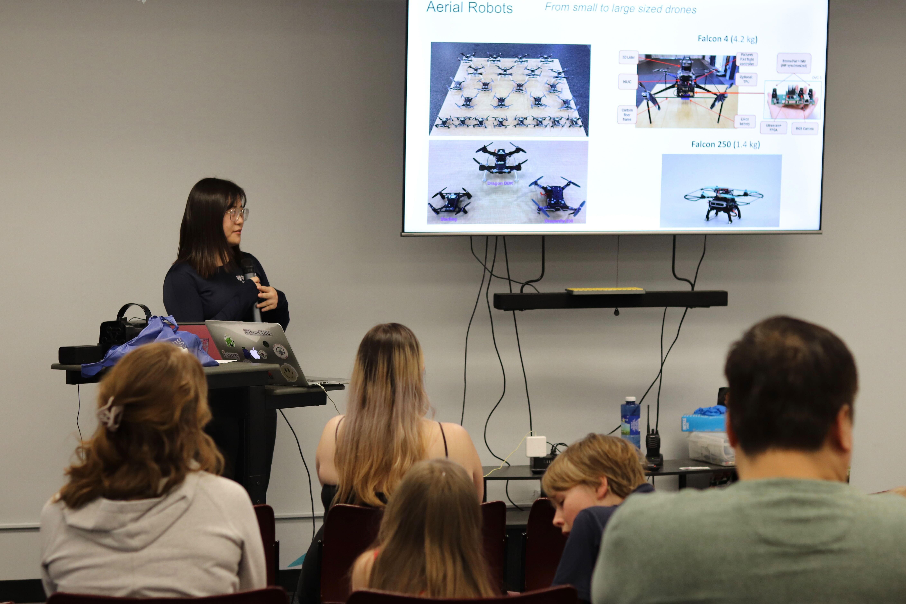

Research Assistant
Field Autonomous System & Computing Lab (FAST), ZheJiang University
- Implemented a sum-of-squares trajectory optimization for quadrotors based on the application of safe flight corridors directly generated on point clouds.
- Proposed a systematic (re)planning framework that considers estimated external forces on quadrotors. Developed an online nonlinear model predictive control with safe ellipsoid boundaries constrained in a safe flight corridor to enforce reliable obstacle avoidance.
- Research on whole-body safe trajectory generation for autonomous vehicles in the urban traffic environment. The back-end optimization is based on a differential-flat system while encodes dynamic obstacles avoidance with surrounding vehicles.
Jul 2020 - Aug 2021
Huzhou, China
Teaching Assistant
School of Engineering and Applied Science, University of Pennsylvania
- MEAM 620 Advanced Robotics (2022, 2023, 2024)
- ESE 542 Statistics for Data Science
- MEAM 520 Introduction to Robotics
Jul 2020 - May 2024
Philadelphia, PA
Reviewer Service
IEEE Transactions on Robotics (T-RO)
IEEE Transactions on Automation Science and Engineering (T-ASE)
IEEE Transactions on Vehicular Technology (T-VT)
IEEE Robotics and Automation Letters (RA-L)
Robotics: Science and Systems (RSS)
IEEE International Conference on Robotics and Automation (ICRA)
IEEE/RSJ International Conference on Intelligent Robots and Systems (IROS)
Public Service

[April 2024]: Gave a talk on
How robots find their way
at Roxborough Library,
Fun With Robots
program.
Open Source
I am passionate about open sourcing to benefit the entire robotics community.
Some of my github repositories:
Resources
RoboPhD:
Some records and notes of papers, seminars, and repos I collect.
Research
AllocNet:
A lightweight learning-based trajectory optimization framework.
forces_resilient_planner:
A systematic framework for local planning under external disturbance.
kr_mp_design:
A guidance for the design and evaluation of motion planners for quadrotors.